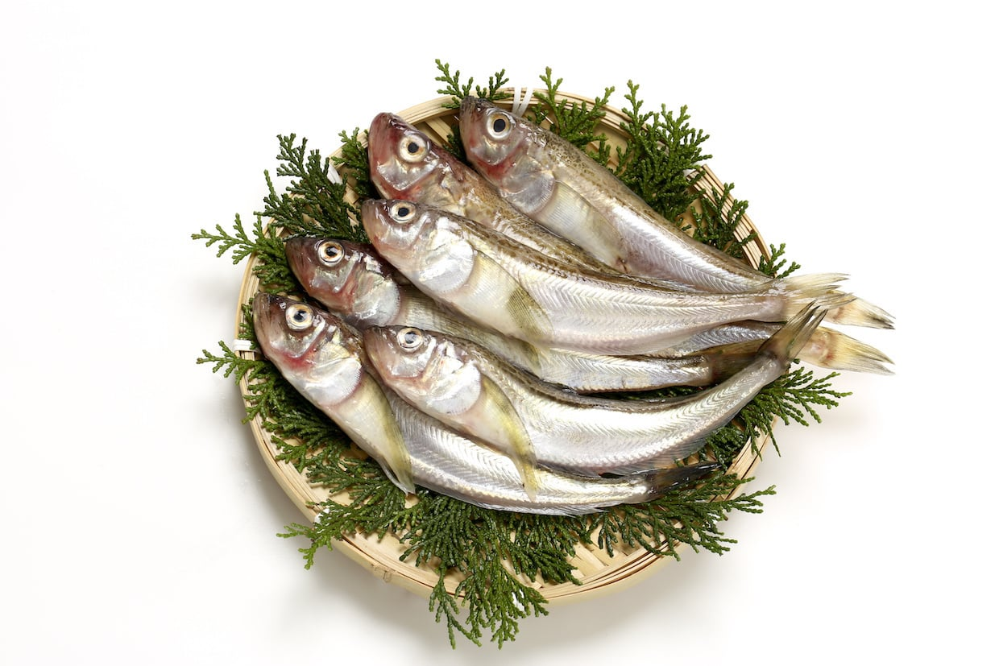
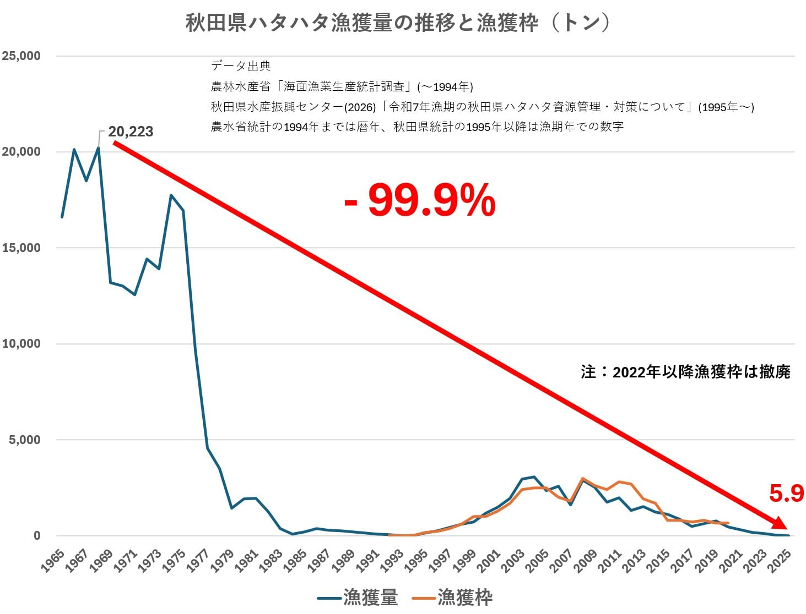

일본 아키타현에서는 도루묵이 많이 잡혀서
오랜 기간 지역 특산물 취급을 받아왔다.

그런데 지역 특산품으로 큰 인가를 얻자
지역 어부들이 도루묵을 너무 많이 잡게 됐고,
그 결과 어획량이 최전성기에 비해
99.9% 이상 줄어들었다.
작년 시즌 어획량이 118킬로그램.
그래서 아키타현에서 금어기를 마련해서
한동안 잡지 말자는 의견이 나왔지만.
해당 수역 도루묵 치어 숫자가 절망적으로 적었다.
덕분에 10년 이상 금어기를 마련해도 멸종은 확정인지라
그냥 전부 다 잡아 먹어버리기로 결정했다.
씨워어언 하게 털어버리기